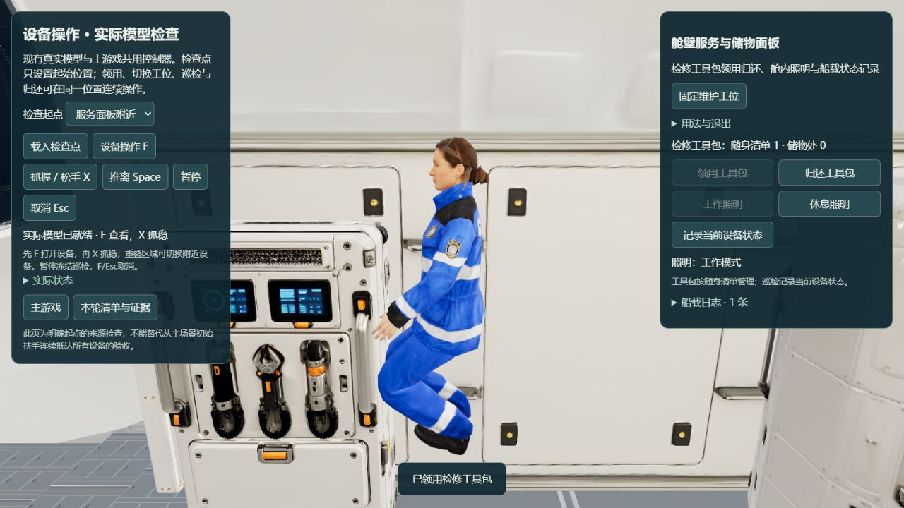
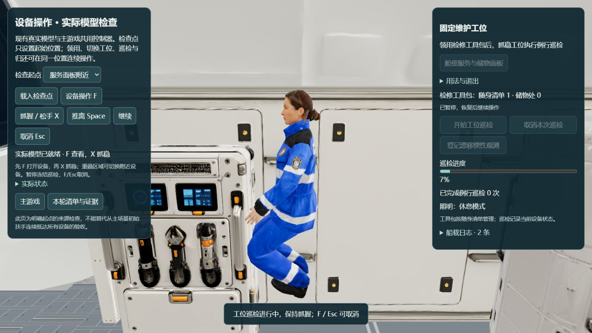
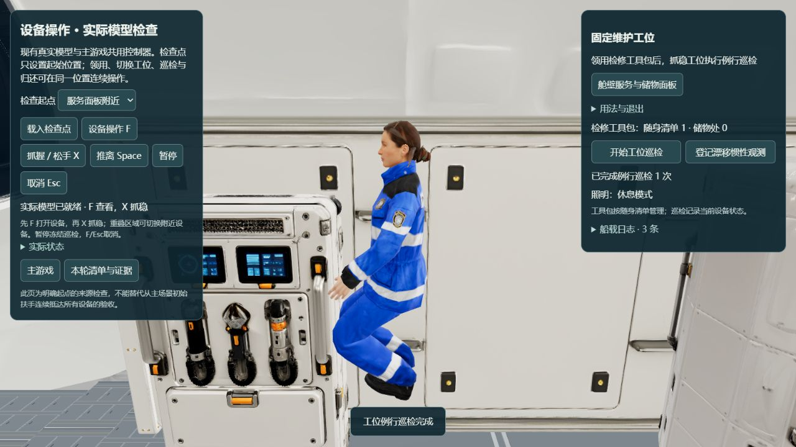
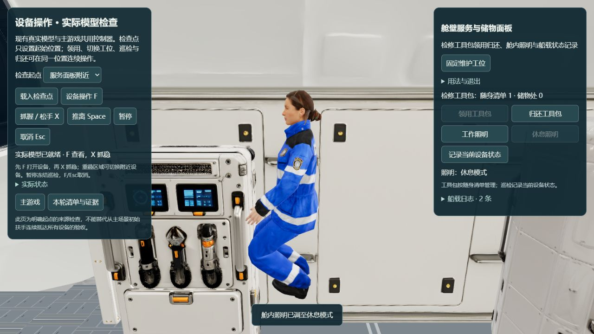
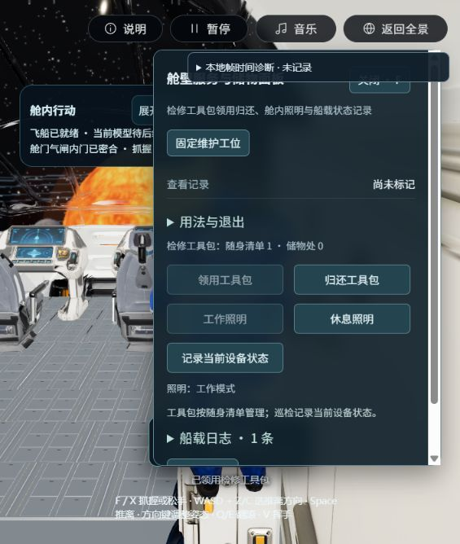
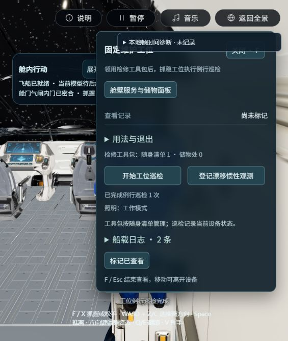
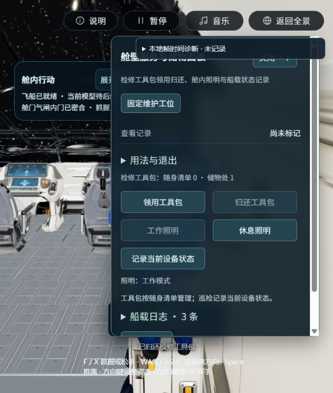
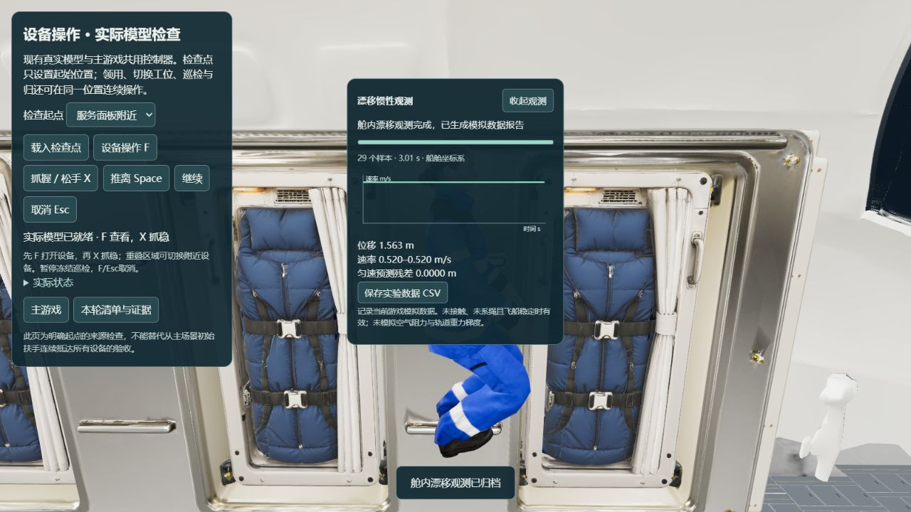
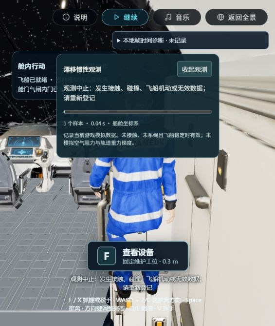

P3-R01 · 2026-10-28 · 桌面 Web · 实际来源模型
把设备接成任务，把动作留下数据
现有10个设备点已有统一用途、条件、反馈和退出规格。本轮接通工具包清单、工位巡检、实际照明切换、船载日志，以及读取实际游戏遥测的漂移惯性观测。
整体仍待验收。 工具包目前按随身清单管理，三维拿取/持械动作尚未制作。完整出返舱仍受门框穿行碰撞阻挡。毛细流、植物与舱外材料实验为设计项，未冒称已有装置。
已经接通的操作
F 查看 → 切换附近设备 → X 抓稳 → 领用工具包 → 工位巡检 → 暂停/恢复 → 结果入船载日志 → 归还工具包

唯一工具包领用后，库存从储物处转到随身清单；重复领用被禁用。此段从标明的设备检查点开始，随后全程不再重设位置。

巡检在约0.298秒暂停，等待后进度保持；恢复后完成并记入日志。实际抓握、距离和增压状态持续检查。
查看完成、归还和照明对照

巡检完成一次。该任务是短期检查，不宣称完成施力维修。归还后恢复储物1、随身0；当前库存与日志随现有场景状态保存恢复。
休息模式降低已有舱内点光强度，工作模式可恢复；不是完整电网或断电模拟。主游戏中的连续操作
从游戏初始扶手选择方向推离，漂到工位附近后X重抓、F查看，再切换附近储物面板，已连续完成领用、巡检和归还。此段没有重设位置或用设备边起点替代抵达；主游戏目前侧栏宽度下，面板会遮挡较多人物，下面保留原始截图。
查看主游戏的领用、巡检与归还

实际主游戏领用成功；非独立设备起点。
同一条连续链完成巡检，库存仍随身1。
工具归还，日志共三条。第一项可记录数据的实验
在工位登记“漂移惯性观测”，从真实抓点推离，松键记录三秒的舱内相对位置和速度。数据有效期内发生碰撞、抓回、系留或飞船机动会中止，不生成有效报告。

本次实景记录29个样本，约3.01秒、位移1.563米、速率0.520m/s。报告按实际时间戳和数据计算；属于游戏模拟数据，未模拟空气阻力及轨道重力梯度。测量结束后继续漂移，截图于之后暂停时取得。
主游戏观测未通过：碰撞中止

主游戏刚才完成巡检的位置直接推离，约0.04秒处发生源面碰撞，观测按无效中止，只有一个样本，没有有效报告。没有放宽物理门限；独立来源观测通过不代替此路线。需继续验证安全的推离方向和净空。全部现有设备的状态
按真实航天操作继续深化的实验
真实性依据与适用边界
NASA把轨道中的微重力解释为共同自由落体。短期检查与需要更强身体约束的施力任务应分开设计。因此本轮保留真实抓握/惯性和短期巡检，把施力维修、流体与生物硬件另列制作阶段。参考：NASA微重力说明、NASA人体集成设计手册。
流体实验和专用科学设施参考NASA毛细通道实验、ESA Fluidics运行记录；植物供液参考NASA植物供液研究。本项目漂移观测是教学性模拟，不冒称这些任务的官方实验复现。
本轮335项测试通过，类型检查和12.56秒生产构建通过；保留既有大chunk提示。没有制作新三维几何、下载/上传新资产、安装、提交或部署。用户视觉、所有设备的主场景连续抵达、冷加载/目标设备长期性能和完整EVA仍未验收。详细证据见本轮记录与来源哈希。